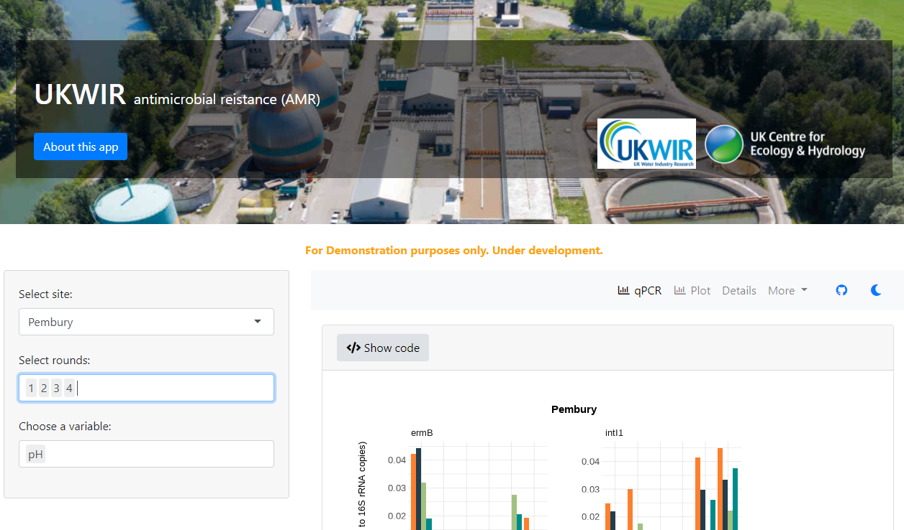

Chapter 4 Promoting openness using Shiny apps
For Demonstration purposes only. Under development.
4.1 GB Rainfall chemistry app
https://cptecn-sandboxdemo.datalabs.ceh.ac.uk/
While notebook technology provides powerful way for users to reproduce entire analyses, sometimes it may be helpful for users to experiment with some changes in small sections of a code in an isolated manner. One option is to turn a R Markdown document to a learnr (Aden-Buie, Schloerke, and Allaire (2022)) document by specifying a few extra options so that the rendered notebook has executable ‘sandboxes’ for users to edit and re-run code chunks in real-time.Here the apporach is demonstrated on the outputs of a recent paper (C.-H. M. Tso et al. 2022). This approach is further documented in C. M. Tso et al. (2022).
Figure 4.1: A screenshot of the GB rainfall interactive notebook site. The main feature is the code box. When the site loads, the code that generates the published version of the figure is in the box and the published version of the figure is below it. Users can make edits and re-run the code in the code box and the figure will update accordingly. Users can use the “Start Over” button to see the published version of the code at any point without refreshing the entire site.
4.2 UKWIR AMR data explorer app
https://ukwir-testing.datalabs.ceh.ac.uk/
In some projects, a large number of measurements are taken and many plots would be generated if all results are plotted in a report. This app allows users to plot and filter the results.
The user may want to reproduce to plots in the app in their own R session. Using the Shinymeta R package [shinymeta], the user can simply import the underlying dataset, copy the code snippet from the ‘Show code’ box in the app, and reproduce the plot in their own R session.

References
Aden-Buie, Garrick, Barret Schloerke, and JJ Allaire. 2022. Learnr: Interactive Tutorials for R.
Tso, Chak‐Hau Michael, Michael Hollaway, Rebecca Killick, Peter Henrys, Don Monteith, John Watkins, and Gordon S. Blair. 2022. “Advancing reproducible research by publishing R markdown notebooks as interactive sandboxes using the ‘learnr’ package.” The R Journal.
Tso, Chak-Hau Michael, Don Monteith, Tony Scott, Helen Watson, Beverley Dodd, M. Glória Pereira, Peter Henrys, et al. 2022. “The Evolving Role of Weather Types on Rainfall Chemistry Under Large Reductions in Pollutant Emissions.” Environmental Pollution 299 (April): 118905. https://doi.org/10.1016/j.envpol.2022.118905.